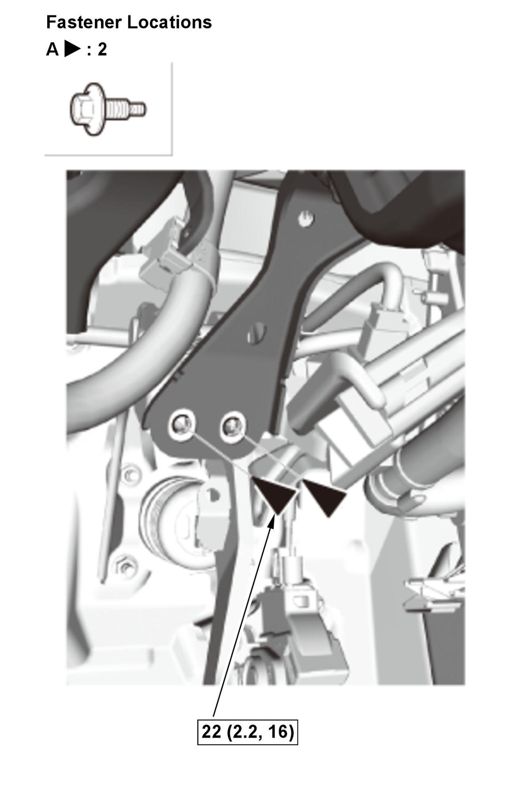
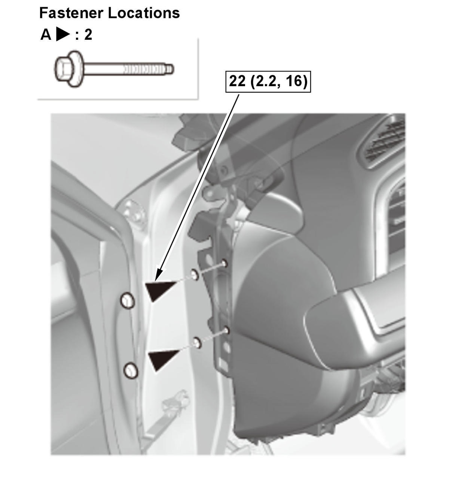
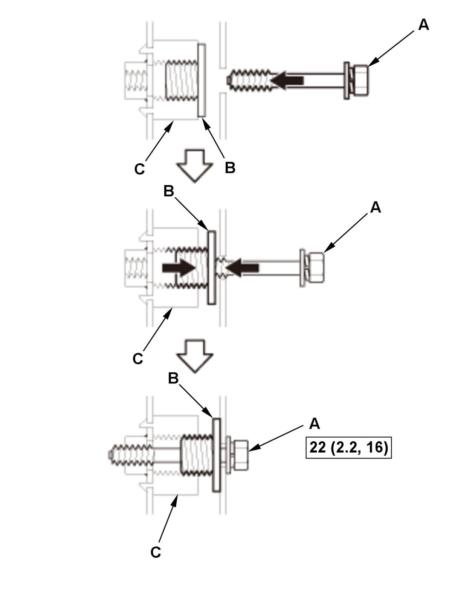

Removal and Installation
SRS components are located in this area. Review the SRS component locations and the precautions and procedures before doing repairs or service.
NOTE: How to read the torque specifications .
- 12 Volt Battery Terminal - Disconnect
NOTE: Wait at least 3 minutes before starting work.
- Driver's Dashboard Lower Cover - Remove
- Passenger's Dashboard Undercover - Remove
- Both A-Pillar Trims - Remove
- Both Kick Panels - Remove
- Steering Column - Remove
- Shift Lever - Remove (CVT)
- Shift Lever Housing - Remove (M/T)
- Rear Heater Joint Duct - Remove
- Wiper Linkage Assembly - Remove
- Center Console Support Bracket - Remove (For Some Models)
- Under-Dash Fuse/Relay Box Bolt - Remove
- Brake Pedal Position Switch - Remove
- Dashboard/Steering Hanger Beam - Remove
Driver's side 1. Disconnect the connectors (A) at the A-pillar.
2. Remove the harness clip (B).
3. Disconnect the connectors (A) and remove the clips (B).
NOTE: The positions and number of connectors vary depending on model type.
Courtesy of HONDA, U.S.A., INC.4. Remove the bolts (A) from under the dashboard. Center console area 5. For some models: Disconnect the connectors (A).
6. Remove the harness clips (B).
7. Remove the bolts (A) from under the dashboard. Passenger's side 8. Disconnect the connector (A) at the A-pillar.
9. Remove the harness clip (B).
10. Disconnect the connectors (A). 11. With stereo amplifier: Disconnect the connectors (B), and remove the harness clip (C).
Passenger's Side Engine Compartment Side
12. Loosen the special bolts (A) until they disengage from the threads on the hanger beam brackets (B), and engage the inside threads of the collar bolts (C). The thread lock on the special bolts makes the special bolts and the collar bolts turn together. 13. Continue to loosen the special bolts to turn the collar bolts into the fixed space adjusters (D) until the collar bolts engage the adjuster brackets. This creates a gap (E) between the collar bolts and the body.
14. Remove the special bolts.
Passenger's Side Engine Compartment Side
15. Check that the collar bolts (A) are seated in the fixed space adjusters (B).
NOTE: If either collar bolt was not seated, replace the special bolts.
Courtesy of HONDA, U.S.A., INC.16. Remove the bolts (A). 17. Lift up the dashboard/steering hanger beam (A) to release it from the guide pins (B) on the body. 18. Carefully remove the dashboard/steering hanger beam through the front door opening.
- All Removed Parts - Install

Courtesy of HONDA, U.S.A., INC.Special Bolt Tightening 1. Install the parts in the reverse order of removal.
NOTE:- Before reinstalling the dashboard, screw the special bolt (A) into the collar bolts (B), and check that they turn together. If they do not turn together, replace the special bolts.
- Before reinstalling the dashboard, be sure the collar bolt on the passenger's side and the engine compartment side can be screwed/unscrewed lightly by hand, and then screw them into the space adjuster (C) fully by hand. Do not tighten them with any tools.
- After setting the dashboard in the body, reinstall all of the mounting bolts but do not tighten them. First tighten the driver's side mounting bolts to the specified torque. Next, tighten the special bolts. As you tighten the bolts, the collar bolts screw out of the space adjuster until they contact the body. Continue tightening the special bolts to the specified torque.